Separate reconstruction and generation
A pretrained RAE acts as a fixed image tokenizer, while a dedicated transformer learns latent denoising.
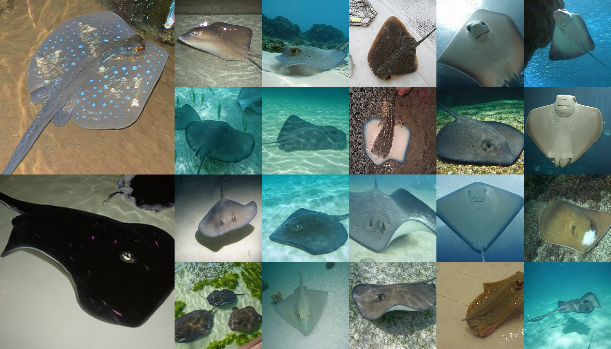
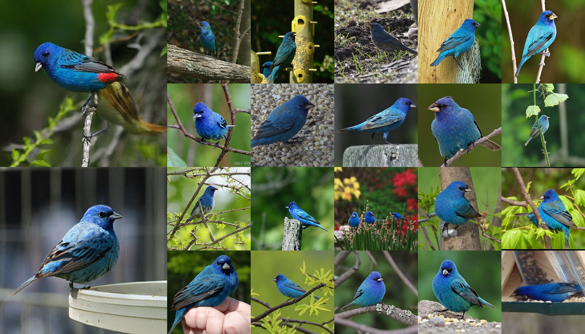
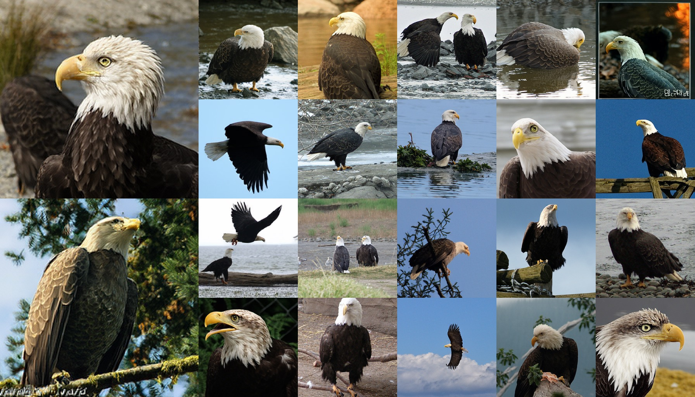
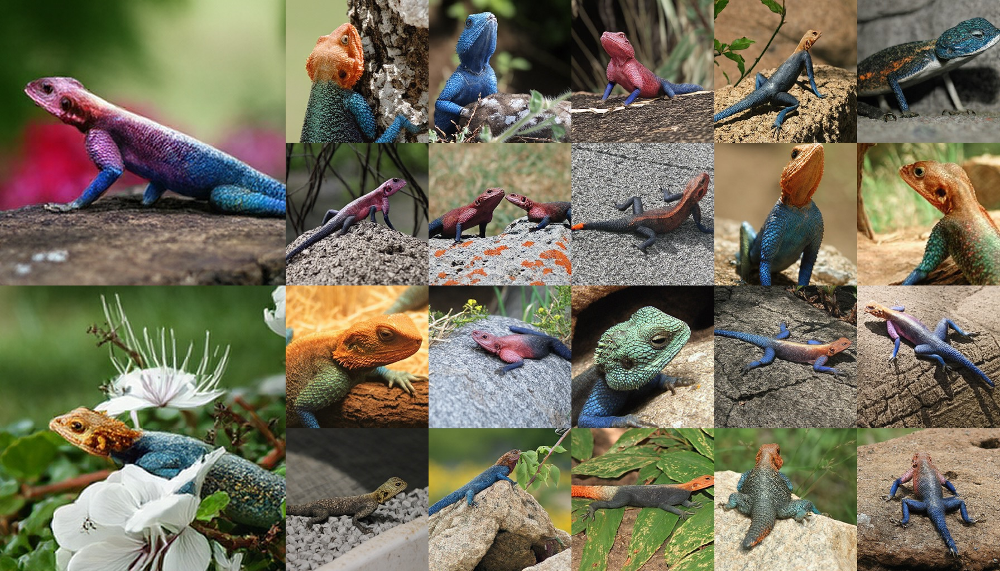
Few-step image generation has seen rapid progress, with consistency and meanflow-based methods significantly reducing the number of sampling steps. Despite their low inference cost, these approaches often suffer from training instability and limited scalability. Sphere Encoder is a recent alternative that produces high-quality images in only a few steps; however, it requires repeated transitions between pixel space and latent space during inference while jointly optimizing reconstruction and generation within a single architecture.
We decouple the framework into a fixed pretrained image encoder and a separate latent denoising model trained entirely in a spherical latent space. This eliminates repeated pixel-space operations during training and inference, improving efficiency and allowing reconstruction and generation to specialize independently. On Animal-Faces, Oxford-Flowers, and ImageNet-1K, our method significantly outperforms Sphere Encoder in generation quality and inference speed while remaining competitive with strong few-step and multi-step baselines.
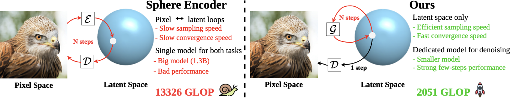
Left: Sphere Encoder repeatedly encodes and decodes during generation. Right: our method denoises only in latent space and decodes once at the end.
A pretrained RAE acts as a fixed image tokenizer, while a dedicated transformer learns latent denoising.
Sampling refines compact spherical latents directly, avoiding expensive pixel-space denoising at each step.
The model learns direct denoising on the hypersphere instead of relying on first-order approximation losses.
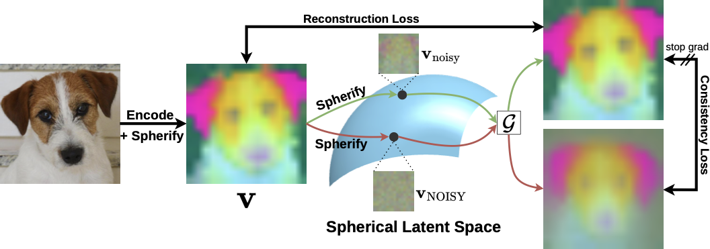
Training objective overview. Noisy spherical latents are denoised with reconstruction and consistency losses.
Latent denoising model
A pretrained representation autoencoder maps an image \(x \in \mathbb{R}^{256 \times 256 \times 3}\) to a latent \(z \in \mathbb{R}^{16 \times 16 \times 768}\). We corrupt the latent with Gaussian noise, project it onto the hypersphere, and train a SiT-style transformer \(\mathcal{G}\) to predict the clean latent.
Few-step latent sampling
Sampling starts from Gaussian noise. Each step projects the current latent to the sphere, denoises it, optionally applies classifier-free guidance, reprojects, and adds decayed noise. The decoder runs only once.
Training losses
Reconstruction loss. Given a noisy spherical latent \(\mathbf{v}_{\text{noisy}}\), the denoiser \(\mathcal{G}\) predicts a clean latent. We align this prediction with the clean RAE latent \(\mathbf{z}\) using both an \(\ell_1\) distance and a cosine-similarity loss.
Consistency loss. We denoise two spherical latents from different noise levels: \(\mathbf{v}_{\text{NOISY}}\) is more corrupted, while \(\mathbf{v}_{\text{noisy}}\) is less corrupted. The lower-noise prediction is treated as a fixed target with stop-gradient \(\mathrm{sg}(\cdot)\), encouraging high-noise predictions to match the cleaner prediction.
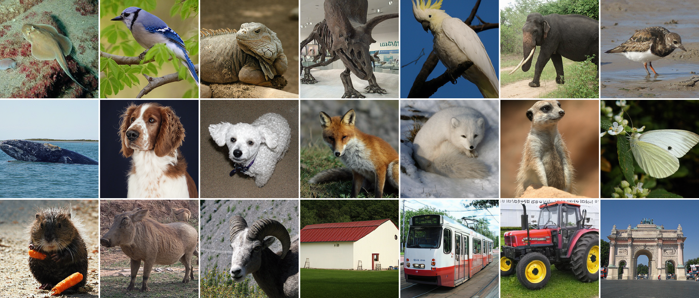
Ours, ImageNet-1K, 4-step generation.
Animal-Faces and Oxford-Flowers
| Model | Data | Param | FID@2 | FID@4 | FID@6 | G@2 | G@4 | G@6 |
|---|---|---|---|---|---|---|---|---|
| Sphere Enc. | AF | 642M | 19.29 | 18.23 | 17.97 | 1965 | 4554 | 7144 |
| Ours | AF | 130M | 10.63 | 6.89 | 6.18 | 302 | 390 | 478 |
| Sphere Enc. | OF | 948M | 16.60 | 12.96 | 12.26 | 3932 | 9118 | 14300 |
| Ours | OF | 130M | 12.22 | 8.61 | 7.85 | 390 | 567 | 743 |
G = GFLOPs. Lower is better.
Class-conditional image generation on ImageNet-1K 256×256
| Method | #Params | NFE | FID ↓ | FDr6 ↓ |
|---|---|---|---|---|
| Multi-step diffusion / flow | ||||
| SiT-XL/2 | 675M | \(250\times2\) | 2.06 | 8.44 |
| SiT-XL/2 + REPA | 675M | \(250\times2\) | 1.42 | 5.45 |
| SiT-XL/2 + REG | 675M | \(250\times2\) | 1.36 | 4.64 |
| LightningDiT-XL/2 | 675M | \(250\times2\) | 1.35 | 4.57 |
| REPA-E | 675M | \(250\times2\) | 1.15 | 3.04 |
| GAE | 675M | \(250\times2\) | 1.13 | 1.97 |
| RAE + DiT-XL | 839M | \(50\times2\) | 1.13 | 3.26 |
| 1-NFE diffusion / flow from scratch | ||||
| MeanFlow-XL/2 | 676M | 1 | 3.43 | 12.30 |
| \(\alpha\)-Flow-XL/2+ | 676M | 1 | 2.58 | 14.14 |
| Drift-L | 463M | 1 | 1.43 | 10.51 |
| iMF-XL/2 | 610M | 1 | 1.72 | 8.39 |
| iMF-XL/2 + FD-loss | 610M | 1 | 0.76 | 2.45 |
| Sphere models | ||||
| Sphere Encoder | 1.3B | \(4\times2\) | 4.02 | 10.44 |
| Sphere Encoder 2 | 487M | \(4\times2\) | 2.86 | 4.92 |
| Ours-XL/1 | 675M | \(4\times2\) | 2.25 | 4.36 |
| Ours-XL/1 | 675M | \(6\times2\) | 2.11 | 4.08 |
NFE ×2 denotes classifier-free guidance. Lower FID and FDr6 are better; FDr6 of prior methods is taken from FD-loss (Yang et al., 2026). Bold marks the best result among sphere models.
We compare noise schedules for sampling \(\sigma\) and \(\sigma_{sub}\). A stronger log-normal schedule improves coverage of noisy spherical latents and gives the best ImageNet-100 FID.
| Data | Setting | FID | Impr. |
|---|---|---|---|
| IN-100 | Baseline | 6.43 | - |
| IN-100 | Uniform | 5.79 | 10.0% |
| IN-100 | LogNorm \(-0.4, 1.0\) | 5.56 | 13.5% |
| IN-100 | LogNorm \(+0.4, 1.0\) | 5.31 | 17.4% |
We study how reconstruction and consistency objectives contribute to denoising. Consistency strongly improves FID, while the additional latent consistency term is less effective after fine-tuning.
| Data | Setting | FID | Impr. |
|---|---|---|---|
| IN-100 | R | 8.97 | - |
| IN-100 | R + C | 5.31 | 40.8% |
| IN-100 | R + C + L* | 4.82 | 46.3% |
| IN-100 | R + C* | 4.68 | 47.8% |
R = reconstruction, C = consistency, L = latent consistency. * continued fine-tuning.
Spherical projection is essential. Removing the spherify operation causes the denoiser to fail, showing that the structured hyperspherical latent space is central to the method.
| Data | Setting | FID | Impr. |
|---|---|---|---|
| IN-100 | w/o spherify | 89.68 | - |
| IN-100 | w/ spherify | 4.68 | 1816.2% |
Sampling quality improves as the denoising process is repeated. Most of the gain appears from 2 to 4 steps, with smaller but still visible improvement at 8 steps.
| Data | Steps | FID | Impr. |
|---|---|---|---|
| IN-100 | 2 | 12.47 | - |
| IN-100 | 4 | 4.90 | 60.7% |
| IN-100 | 8 | 4.13 | 66.9% |
The latent tokenizer strongly affects generation. RAE provides semantically rich, high-dimensional latents, producing much better samples than compact VAE-style representations.
| Data | Setting | FID | Impr. |
|---|---|---|---|
| AF | FLUX VAE | 172.25 | - |
| AF | GAE | 23.26 | 86.5% |
| AF | RAE | 10.63 | 93.8% |
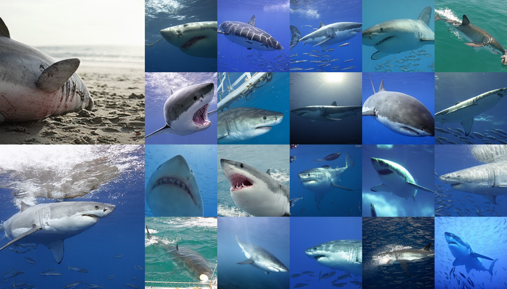
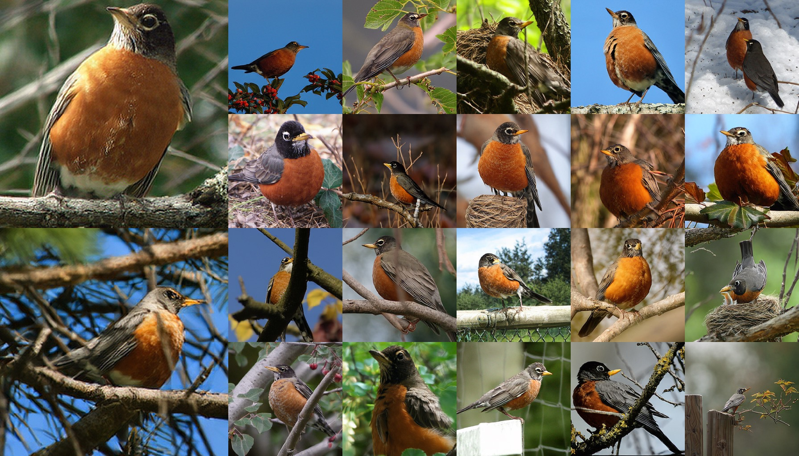
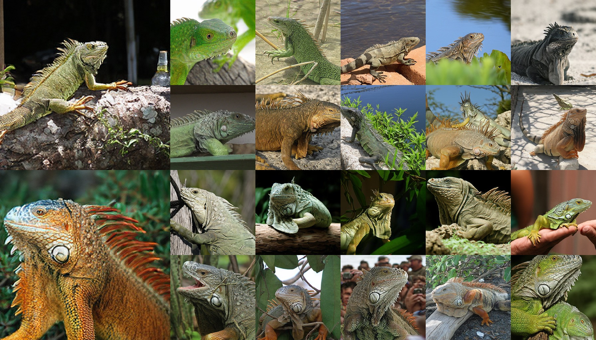
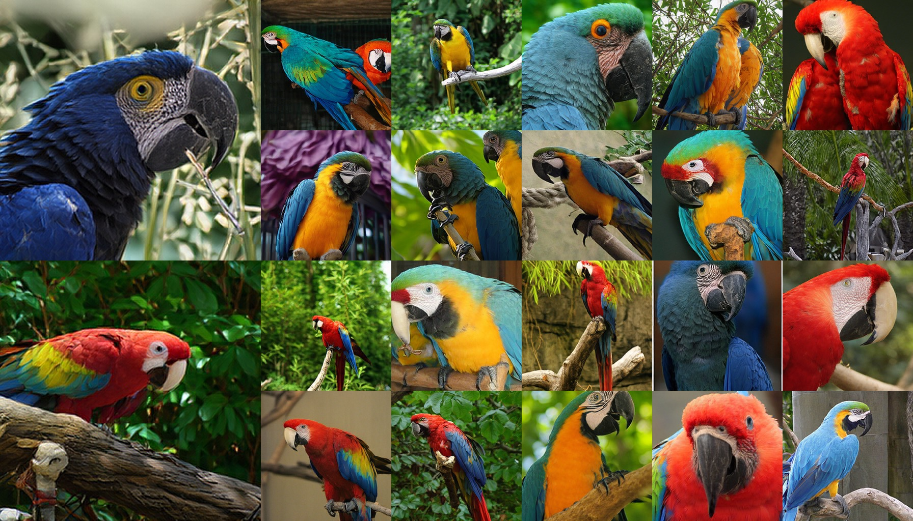
@inproceedings{do2026spherelatent,
title = {Efficient Image Synthesis with Sphere Latent Encoder},
author = {Do, Tung and Nguyen, Thuan Hoang and Li, Hao},
booktitle = {Advances in Neural Information Processing Systems (NeurIPS)},
year = {2026}
}